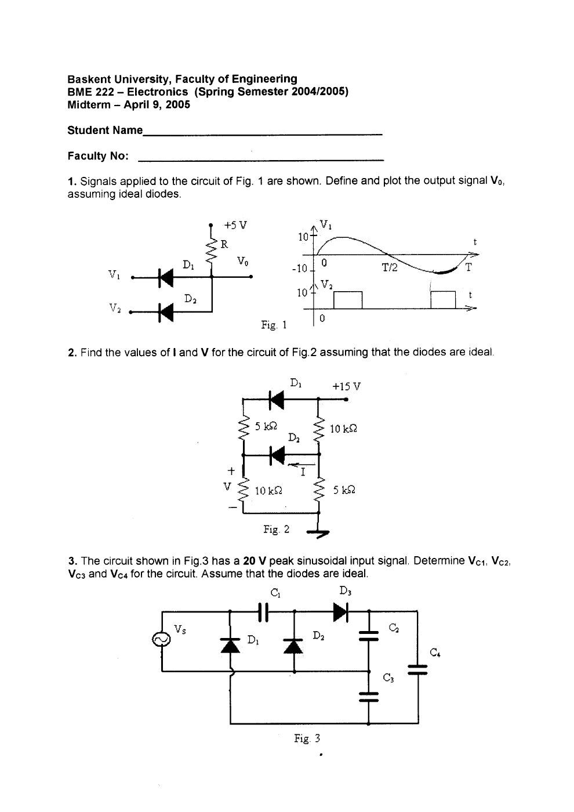
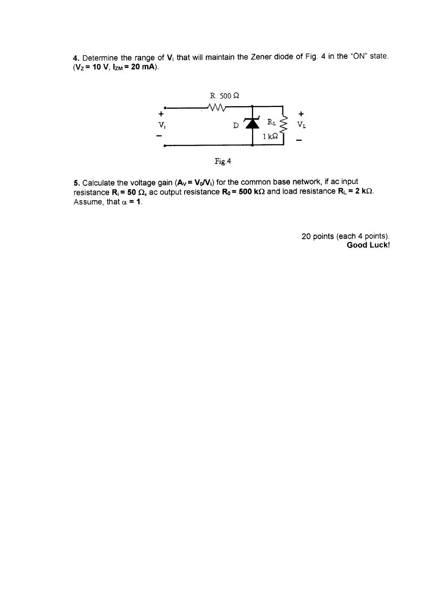
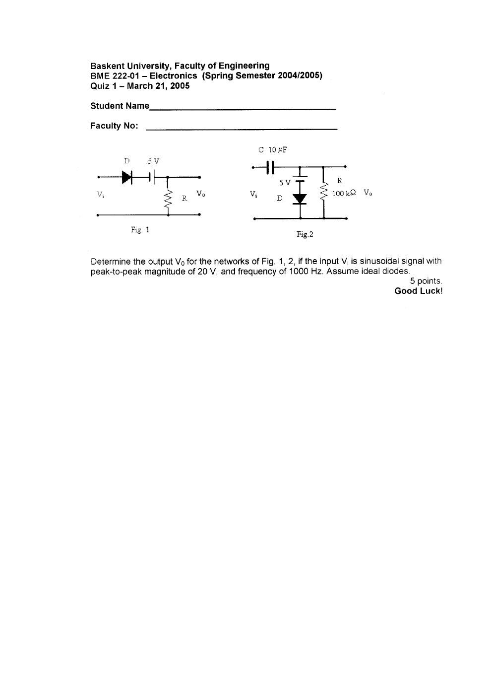
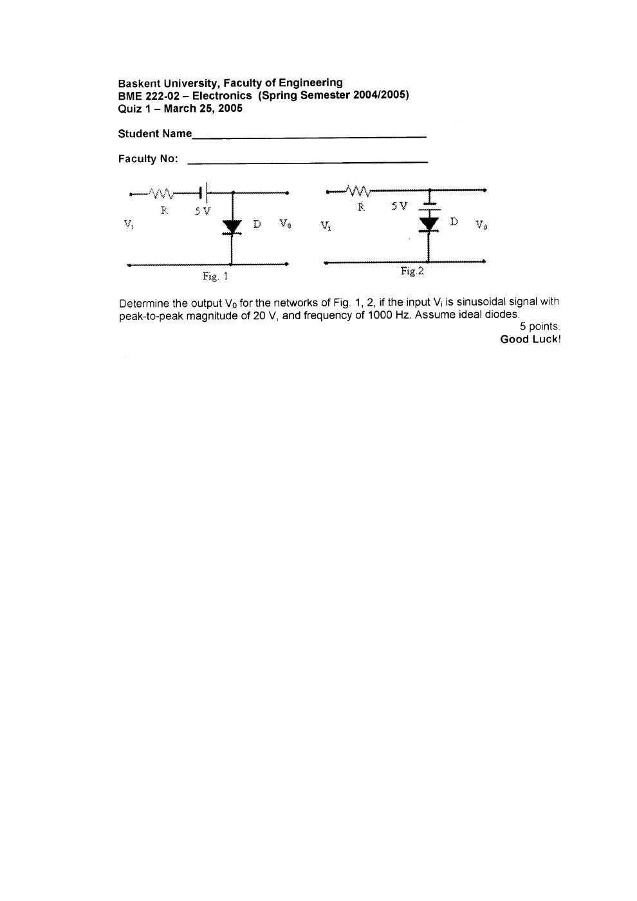
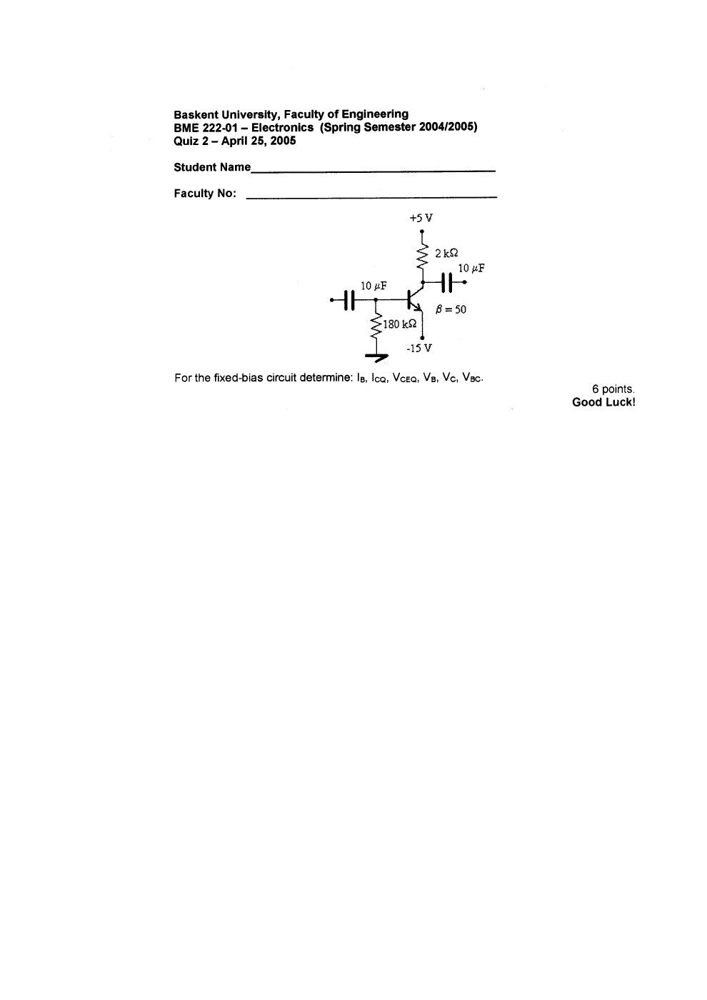
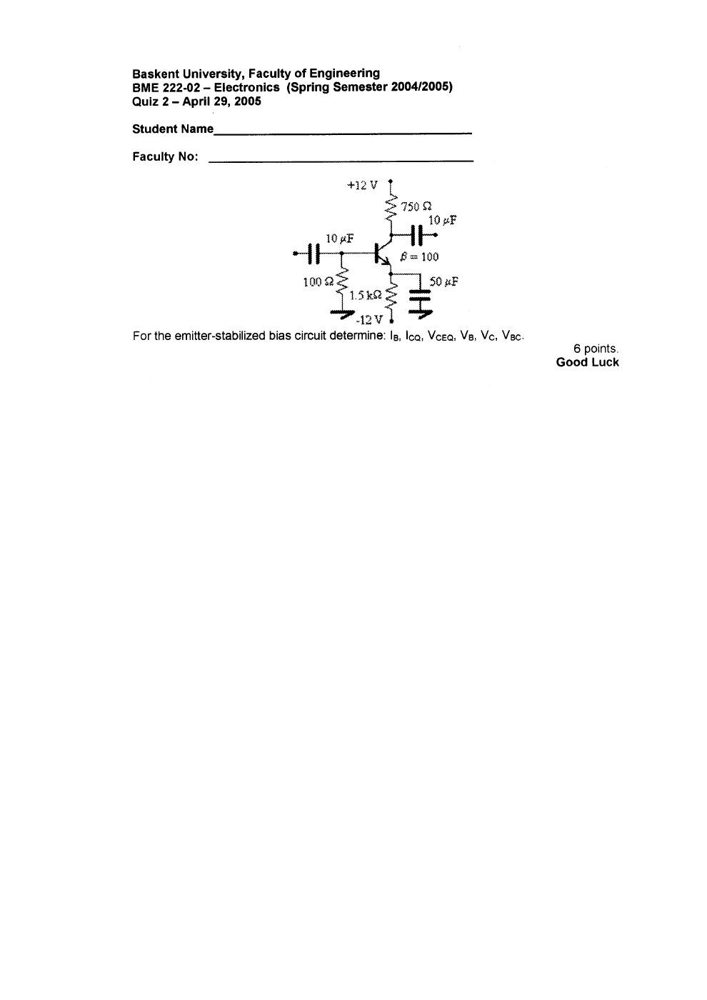
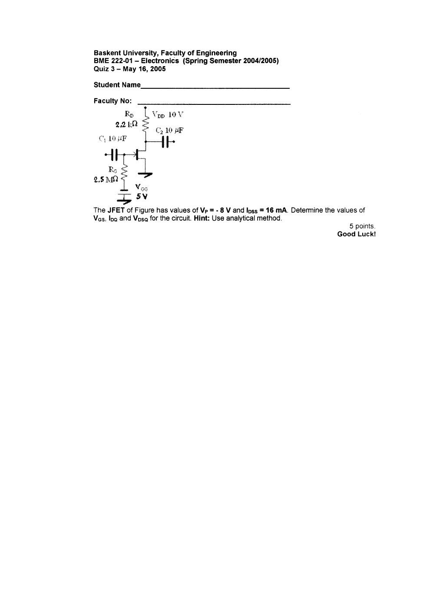
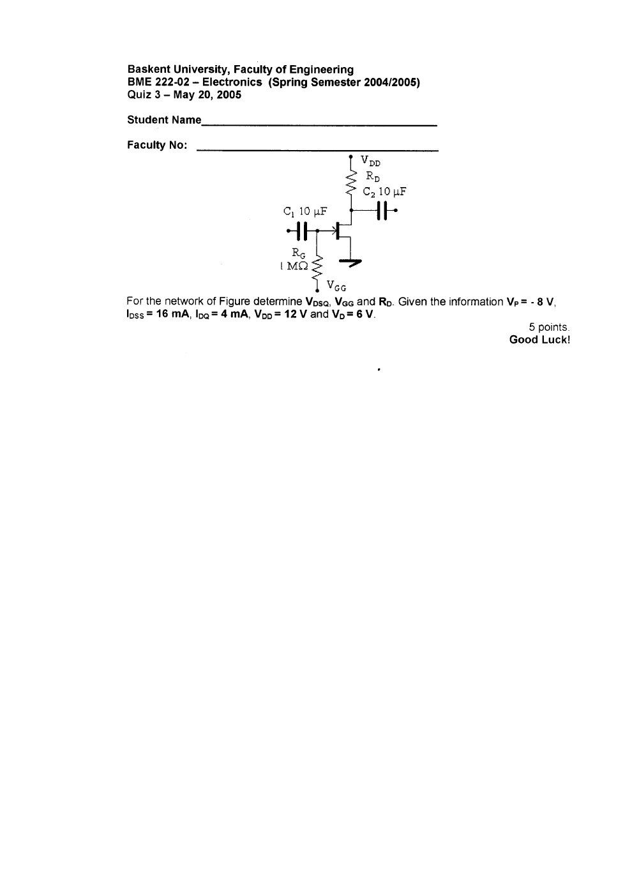

· EEM214
EEM214 Electronics I: BME222 Electronics Exams and Solutions (Başkent University, 2005)
EEM214 – Elektronik I · 20.05.2005 · 18.10.2026
This post contains the midterm exam and three quizzes from each of the two sections of the Başkent University BME222 Electronics course, from the 2004–2005 spring semester, stored in the EEM214 Electronics I folder. The author is not named; the documents carry dates from 21 March to 20 May 2005. The scanned question and handwritten solution pages were transcribed into text; the seven PDFs can be downloaded as a ZIP at the end of the post. The documents' course code is BME222; they are under EEM214 because of the source folder.
This content belongs to a third-party source; it is shared for archival and nostalgic purposes with the source credited. It will be removed at the request of the rights holder.
Midterm exam — 9 April 2005
There are five questions, each worth 20 points. The diodes are assumed to be ideal.

Question 1: Output of the circuit with two diodes
An output node connected through a resistor to 5 V is connected through two diodes to the inputs V₁ and V₂. V₁ is a ±10 V sinusoid; V₂ is a square wave varying between 0 and 10 V. The waveform V_o(t) is requested.
In the solution graph, the output is determined by the smaller of the inputs and by the effect of the 5 V supply limit:
V_o(t) = min[5 V, V₁(t), V₂(t)].
When V₂ = 0, the positive input portions are limited to 0 V; when V₂ = 10 V, the upper limit of the output is 5 V. The negative portion of V₁ passes through to the output.
Question 2: I and V
In the circuit with a 15 V supply, two diodes, and 5 kΩ–10 kΩ resistors, I and V are requested. In the solution, D₁ is conducting and D₂ is cut off. The voltage divider on the left branch gives:
V = 15 × 10/(5 + 10) = 10 V.
Since there is also 10 V across the lower-right 5 kΩ, there is no voltage across D₂ to make it conduct; the result given is I = 0 A.
Question 3: Voltage tripler
The peak value of the input sinusoid is V_m = 20 V. With ideal diodes, the voltages of C₁, C₂, C₃ and the total C₄ are requested. Solution:
- C₁ and C₃ charge to V_m = 20 V in separate half-cycles.
- C₂ charges to 2V_m = 40 V through D₃.
- The output across C₄ from the series combination of C₂ and C₃ is V_C4 = 3V_m = 60 V.
Question 4: Input range over which the Zener operates
R = 500 Ω, R_L = 1 kΩ, V_Z = 10 V and I_ZM = 20 mA. At the lower limit, I_Z = 0:
V_i,min = [(R_L + R)/R_L]V_Z = 15 V.
The load current is I_L = 10 V/1 kΩ = 10 mA. At the upper limit, I_R,max = I_ZM + I_L = 30 mA:
V_i,max = I_R,max R + V_Z = 25 V.
Thus, in the ideal model, the limit values are 15–25 V; for full conduction, the input stays above the lower limit.
Question 5: Gain of the common-base amplifier
Given: R_i = 50 Ω, R_o = 500 kΩ, R_L = 2 kΩ, α = 1. Using the fact that R_o is large compared to the load, the solution gives:
I_i = V_i/50, I_o ≈ I_i, V_o ≈ I_o R_L = 40V_i, A_v ≈ +40.
Note: The solution neglects R_o = 500 kΩ. If the finite output resistance is taken into account, A_v = α(R_o ∥ R_L)/R_i ≈ 39.84.

Quiz 1 — Diode clippers and clampers
Each section's question is worth 5 points. The input is a 20 V peak-to-peak, 1 kHz sinusoid; the diodes are ideal.
BME222-01 — 21 March 2005
The first circuit consists of a series diode, a 5 V source and a load resistor. The transition level is V_i = −5 V. The solution finds V_o = 5 V for V_i = 0 and V_o = 15 V for V_i = 10 V. The lower part of the output is limited at zero:
V_o = max(0, V_i + 5 V).
The second circuit has C = 10 µF, R = 100 kΩ and a 5 V bias. The time constant is τ = RC = 1 s and the signal period is T = 1 ms. Since τ ≫ T, the capacitor voltage is approximately preserved. At the positive peak, C charges to 5 V; the output swings between +5 V and −15 V.

BME222-02 — 25 March 2005
In the first circuit, the diode after the series resistor and the 5 V source limits the output to zero. The transition is at V_i = −5 V; at the negative peak, V_o = −5 V. In the second circuit, the output after the series resistor is clipped at the −5 V level by the 5 V source and the diode branch. The waveforms in the solution are, respectively:
- Figure 1: V_o = min(0, V_i + 5 V).
- Figure 2: V_o = min(−5 V, V_i).

Quiz 2 — BJT DC analysis
Each question is worth 6 points; I_B, I_CQ, V_CEQ, V_B, V_C and V_BC are requested. In DC analysis, coupling and bypass capacitors are open circuits.
BME222-01 — 25 April 2005
Circuit: the collector is connected to +5 V through 2 kΩ, the emitter to −15 V, and the base to ground through 180 kΩ; β = 50. The solution takes V_BE = 0.7 V:
- I_B = (15 − 0.7)/180 kΩ ≈ 79 µA.
- I_CQ = βI_B ≈ 3.95 mA.
- V_CEQ = 20 − I_CQ·2 kΩ = 12.1 V.
- V_B = −I_B·180 kΩ = −14.22 V.
- V_C = −15 + 12.1 = −2.9 V.
- V_BC = V_B − V_C = −11.32 V.
Note: These are the rounded values in the solution. Without rounding in the intermediate steps, I_B ≈ 79.44 µA, I_C ≈ 3.972 mA, V_B = −14.3 V and V_C ≈ −2.944 V are obtained.

BME222-02 — 29 April 2005
Circuit: ±12 V supplies, R_C = 750 Ω, R_E = 1.5 kΩ, R_B = 100 Ω and β = 100. Solution:
I_B = (12 − 0.7)/[100 + 101·1500] ≈ 74.5 µA.
- V_B = −I_B R_B = −7.45 mV.
- I_CQ = βI_B = 7.45 mA.
- With the approximation I_E ≈ I_C, V_CEQ = 24 − I_C(R_C + R_E) = 7.24 V.
- V_C = 12 − I_CR_C = 6.41 V.
- V_BC ≈ −6.42 V.
Note: In the V_CE step of the solution, the approximation I_E ≈ I_C is used. With I_E = (β + 1)I_B and without intermediate rounding, V_CE comes out to approximately 7.15 V.

Quiz 3 — JFET operating point
Each question is worth 5 points. The basic relation is the Shockley equation:
I_D = I_DSS(1 − V_GS/V_P)².
BME222-01 — 16 May 2005
V_P = −8 V, I_DSS = 16 mA, V_DD = 10 V, R_D = 2.2 kΩ, R_G = 2.5 MΩ and V_GG = 5 V. Since the gate current is taken as zero:
- V_GSQ = −V_GG = −5 V.
- I_DQ = 16 mA·[1 − (−5)/(−8)]² = 2.25 mA.
- V_DSQ = 10 − 2.25 mA·2.2 kΩ = 5.05 V.

BME222-02 — 20 May 2005
Given V_P = −8 V, I_DSS = 16 mA, I_DQ = 4 mA, V_DD = 12 V and V_D = 6 V. V_DSQ, V_GG and R_D are requested.
- V_GS = V_P[1 − √(I_D/I_DSS)] = −4 V.
- V_GG = 4 V.
- Since the source is grounded, V_DSQ = 6 V.
- R_D = (12 − 6)/4 mA = 1.5 kΩ.
